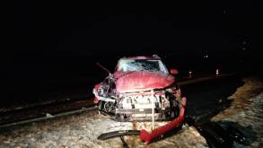
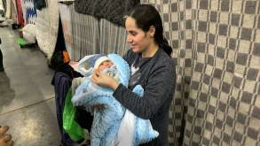

-
-
В Гродненской области число киберпреступлений в 2021 году сократилось на треть
В Гродненской области снизилось количество зарегистрированных преступлений. Наблюдается снижение количества убийств, грабежей, разбоев, хулиганств, краж и мошенничеств.
-
В Беларуси планируют создать опытное производство отечественных электромобилей
На основе созданного задела планируется во взаимодействии с предприятиями-партнёрами выйти на опытное производство линейки отечественных электромобилей.
-

Водитель легковушки, который в темноте протаранил стоявший на дороге погрузчик под Щучином, рассказал подробности
По словам Александра, сам погрузчик стоял без опознавательных знаков, потому как знак аварийной остановки, который ставится на трассе за 40 метров, чтобы предупредить водителя о препятствии на пути, отсутствовал
-

Переехали на те же спальные места, где они жили до рождения детей: На видео показали быт мигранток с новорожденными, которые переехали на границу из Гродно
Сейчас в ТЛЦ находится три семьи с младенцами в возрасте одного месяца. Две девочки и один мальчик родились в декабре и стали первыми детьми мигрантов, которые родились уже в Беларуси.
-
В Гродненской области число киберпреступлений в 2021 году сократилось на треть